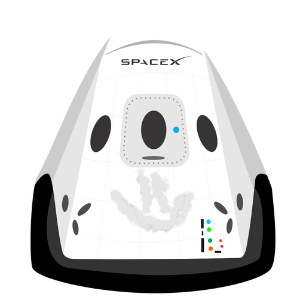

Hyperblog Tu blog de confianza
A este es es el titulo atractivo e interesante de este post
y este es el párrafo de inicio donde vamos a explicar las cosas increábles que se pueden hacer con ramas
Los blogs son la mejor forma de compartir informacion de tus ideas. Mucho mas que ir a conferencias o salir en Youtube. Excepto si eres un rockstar. pero estadisticamente bno lo eree... por ahora.
Suscribete y dale link